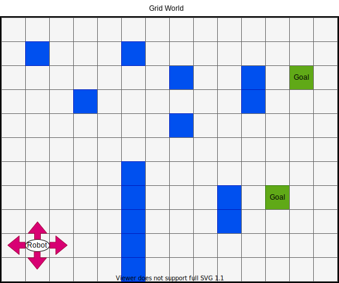
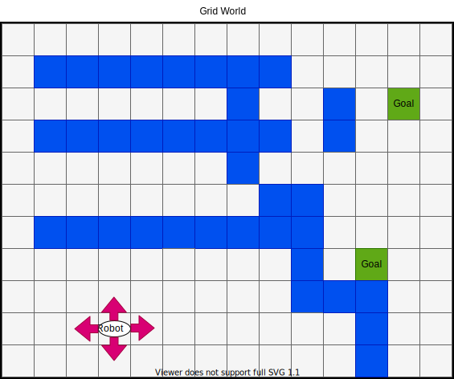
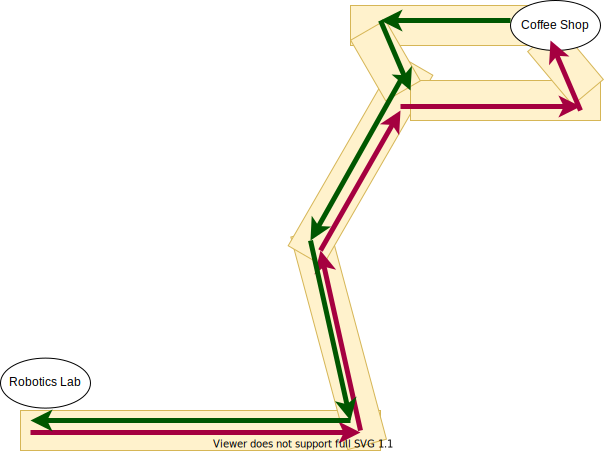

Heuristic Search
Jacky Baltes
National Taiwan Normal University
Taipei, Taiwan
jacky.baltes@ntnu.edu.tw

Uniformed Search Methods
- So far, we considered depth first search (DFS), breadth first search (BFS), and hill climbing (HC) as well as iterative deepening depth first search (IDDFS).
- All of these are uninformed search algorithms, because they do not use any information about the domain (domain knowledge).
- Only need a state representation, an is_valid function, an is_goal function, and a successor function (to create the children)
Uniformed Search Methods
- Those algorithms are limited to small problems.
- Most problems that we want to solve are more complicated than that.
- Problem is the combinatorial explosion
- Chess (after 40 moves), \( 10^{120} \) different positions
- Go \( 10^{800} \) possible board positons
- Real world/robotics are even more complex. Consider all the states that robot may be in after 10 minutes. Few of the states we expect to occur
Using Domain Knowledge
- We know states are good or are likely to occur
- A vast state space is not necessarily a problem
- Think about a navigation problem
Robot Navigation Domain
- Robot can move one cell up, down, left or right
- Robot has to enter one of the green goal cells
- Blue cells are obstacles
Robot Navigation Domain as Search Problem
- Maximum branching factor: 4 (actions up, down, left, and right)
- Depth of the search space: distance between the current state and the closest goal state
- Minimum would be \( abs(x_R - x_G) + abs(y_R - y_G) \), where G is the closest goal to the robot
- This distance is called the Manhatten distance
- If the robot can also move on the diagonals (up right, up left, down right, down left), then the maximum branching factor would change to 8 and the distance to the goal would be smaller
Robot Navigation
- For the state shown in the figure above, we would estimate the search complexity to be \( 4^{16} \) = 4294967296
- However, just a large search space is not necessarily a problem
- For example, if there are no obstacles in the path
- In this case, the robot can just keep moving toward the goal
Robot Navigation
- This is a hard problem since any moves towards the goal are in the wrong direction
- But most problems are not like this
- Otherwise humans would not be able to make much progress either
- So most of the time, moving in the direction of the goal is a good idea
- One of the problems with early AI research was that people focused on puzzles
- but puzzles often work against the ideas that usually work
- Research was heavily biased against common real world problems
Crossing a Bridge
- Tom, Mary, Sue, and John are chased by zombies at night
- They come to a bridge, but only have one flash light and the bridge can only support two people
- You cannot throw the flashlight
- The people have different speeds
- Tom can cross the bridge in 1 min
- Mary takes 2 min
- Sue takes 5 min
- John takes 10 min
- What is the minimum time for all people to cross the bridge
Crossing a Bridge with AI
- Maximum branching factor: 4 + (4*3) = 16
- Solution length: 5
- Most people will end up with the following solution:
- Tom and Mary across (2 min)
- Tom goes back with the flashlight (1 min)
- Tom and Sue across (5 min)
- Tom goes back with the flashlight (1 min)
- Tom and John across (10 min)
- Total time: 19 min
Crossing a Bridge Solution
- Most people think the best 19 min is the best time
- Assumption is to move the faster runners
- But 19 min is not the best solution
- Puzzle can be done in 17 min
- Tom and Mary across (2 min)
- Tom goes back with the flashlight (1 min)
- John and Sue across (10 min)
- Mary goes back with the flashlight (2 min)
- Tom and Mary across (2 min)
- Total time: 17 min
- In this case, our assumption that having the faster runners move is wrong
Heuristics
- To make sense of the world, humans and other animals use rules of thumb
- These rules work most of the time, but not always
- In puzzles, they usually never work
- These rules/assumptions are called heuristics
Heuristics
- Improve uninformed search, then I want to use heuristics to guide the search
- If I want to fly to Paris, then it seems smarter to fly from Taipei to Bangkok or Istanbul, instead of San Francisco or New York
- It is possible that the next flight from Bangkok is not for 48 hours, but is not what I expect to happen most of the time
- When we use heuristics, we often do not find the optimal solution (e.g,, bridge crossing puzzle), but a good enough solution (19 min)
- Human intelligence seldom finds the optimal solutions
- Finding a satisficing solution
UofC Coffee Shop Problem
- To go to lunch from the robotics lab, we always used the red path
- On the way back, we would always use the green path
- Clearly not both of them can be the optimal path
- Both paths were satisficing, in our world
Satisficing and Heuristics
- Satisficing solutions and heuristics to make the problem managable at all
- We prefer finding a non-optimal solution in 1 hr over waiting 1000 years for the best solution
-
Of course the decision that is optimal in the simplified model will seldom be optimal in the real world. The decision maker has a choice between optimal decisions for an imagined simplified world or decisions that are good enough, that satisfice, for a world approximating the complex real one more closely. We use heuristic solutions to hard problems not because we prefer less to more but because we have no choice
H. Simon, The Sciences of the Artificial, p 35
Artificial Intelligence and Search
- Up to 1985, the mantra of AI research was "Search is the crux of AI"
- A lot of research on better and more efficient search algorithms
- The amount of intelligence (smartness) of an algorithm was measured by how fast the algorithm could search through nodes
Artificial Intelligence and Search
-
The amount of intelligence in a search strategy is measured not by the amount of search actually performed, but by the amount that would have been necessary had an intelligent method not been used (i.e. by the amount of search avoided).
Newel and Simon (General Problem Solver) - After 1985, the mantra of AI research was "Avoiding Search is the crux of AI"
- Cutting out large parts of the search space
- Focus on the parts that are likely to include a solution
Artificial Intelligence and Search
- Computers beat the human world champion in chess (Gary Kasparov, Deep Blue, IBM, 1996) and Go (Lee Sedol, Alpha Go, Google, 2016)
- Even before this time, computers would play strong moves most of the time
- But once in a while, they would make a really stupid move
- Against a world champion player, they would then be doomed to loose
- AI is all about never making a really stupid move, rather than trying to find the optimal/best move (Jacky Baltes)
Distance/Cost Functions
- Model the kind of knowledge that people use to guide their decisions (heuristics)
- Goodness of a state: how likely it is to lead to a solution
- Goodness increases as we move towards the goal, goodness increases
- A state is good if it close to a solution
- Distance/cost to the solution decreases as we move towards the solution
- The amount of work that we have to do is approximately \( b^d \), where \(b \) is the average branching factor, and \( d \) is the length of the path to the closest solution
Quality Functions
- For some domain, it may be more natural to express goodness of a state as an increasing quality or reward function
- For example, if you want to implement a poker playing program, then modeling it as the amount of money you expect to win seems more natural than a cost function
Heuristic Functions and Computational Cost
- Assumption is that heuristic function can be calculated quickly
- A quick guess about the distance to the goal
- Estimate of how much work it is to extend this node to a solution